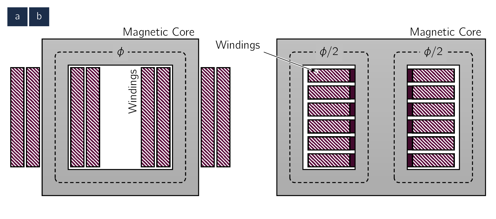
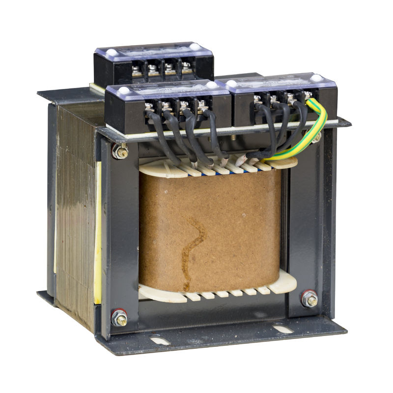
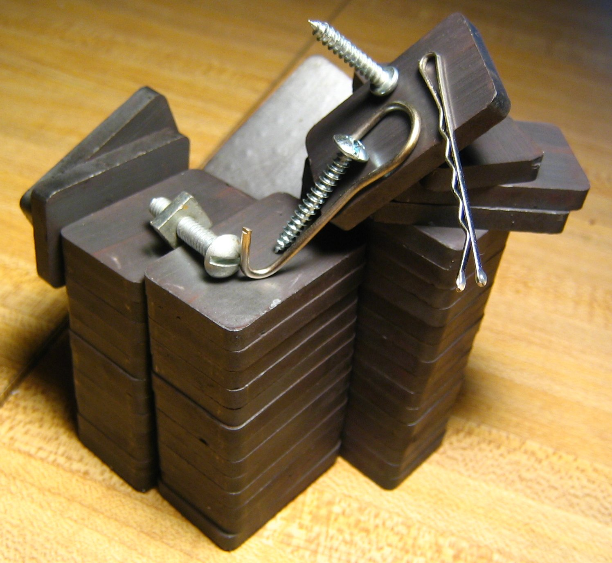
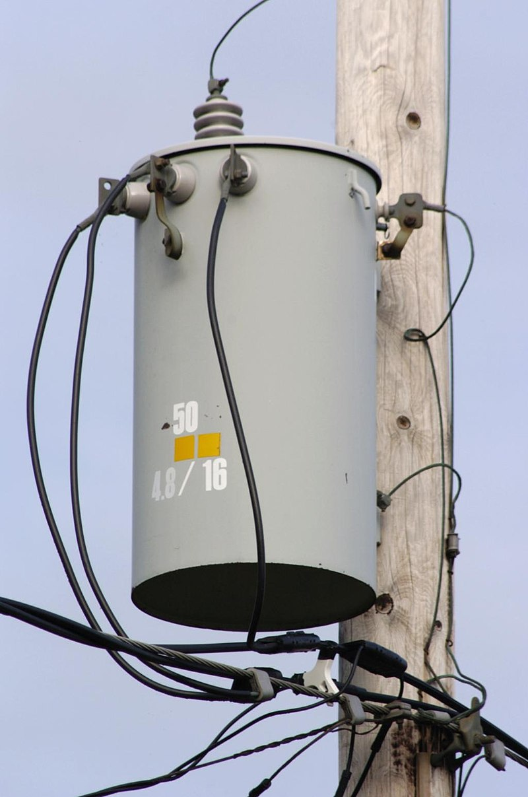

By properly proportioning the number of primary and secondary turns, almost any desired voltage
ratio, or ratio of transformation, can be obtained.
Figure 2.1: Schematic views of (a) core-type and (b) shell-type transformers.

The essence of transformer action requires only the existence of a time-varying mutual flux linking
the two (2) windings. Such action can occur for two (2) windings coupled through air, but coupling
between the windings can be made much more effectively using a core of iron or other ferromagnetic
material, as most of the flux is then confined to a definite, high-permeability path, linking both
windings.
Such a transformer is commonly called an iron-core transformer which makes majority of the
market. [25]

[25]An example of an iron-core transformer.
The chapter is concerned primarily with iron-core transformers. As we looked at the topic
previously, to reduce the losses caused by eddy currents in the core, the magnetic circuit usually
consists of a stack of thin laminations. Two common construction types are shown in Fig.2.1:
Core
Shown in Fig.2.1a, the windings are wound around two legs of a rectangular magnetic
core.
Shell
Shown in Fig.2.1b the windings are wound around the centre leg of a three-legged
core.
Silicon-steel laminations ( )
thick are generally used for transformers operating at frequencies below a few hundred
. Silicon steel has the
desirable properties of low cost, low core loss, and high permeability at high flux densities. [26]This value ranges between
to
.
The cores of small transformers used in communication circuits at high frequencies and low energy
levels are sometimes made of compressed powdered ferromagnetic alloys known as ferrites.
[27]

[27]A family of iron oxide-containing magnetic ceramic materials. They are ferrimagnetic,
meaning they are attracted by magnetic fields and can be magnetized to become permanent
magnets. Unlike many ferromagnetic materials, most ferrites are not electrically conductive,
making them useful in applications like magnetic cores for transformers to suppress eddy
currents.
In each of these configurations, most of the flux is confined to the core and therefore links both
windings. The windings also produce additional flux, known as leakage flux, which links one winding
without linking the other.
Although leakage flux is a small fraction of the total flux, it plays an important role in
determining the overall behavior of the transformer which will be looked later.
In practice, leakage is reduced by subdividing the windings into sections placed as close together as
possible. In the core-type construction, each winding consists of two sections, one section on each of the
two legs of the core, the primary and secondary windings being concentric coils. In the shell-type
construction, variations of the concentric-winding arrangement may be used, or the windings may
consist of a number of thin “pancake” coils assembled in a stack with primary and secondary coils
interleaved.
Information 2.5: Distribution Transformers
Provides a final voltage reduction in the electric power distribution system, stepping down the
voltage used in the distribution lines to the level used by the customer. [28]

[28]A single-phase
distribution transformer. If mounted on a utility pole, they are called pole-mount transformers.
When placed either at ground level or underground, distribution transformers are mounted
on concrete pads and locked in steel cases, thus known as distribution tap pad-mounted
transformers.
Distribution transformers typically have ratings less than
,
although some national standards allow units up to
to be described as distribution transformers. Since distribution transformers are energized 24
hours a day even when they don’t carry any load, reducing iron losses is vital in
their design. They usually don’t operate at full load, so they are designed to have
maximum efficiency at lower loads. To have better efficiency, voltage regulation in these
transformers is kept to a minimum. Therefore, they are designed to have small leakage
reactance.
Authors Note The website you are viewing is auto-generated using lms-WebBook and therefore subject to slight errors in typography and formatting. When in doubt, please consult the LectureBook.